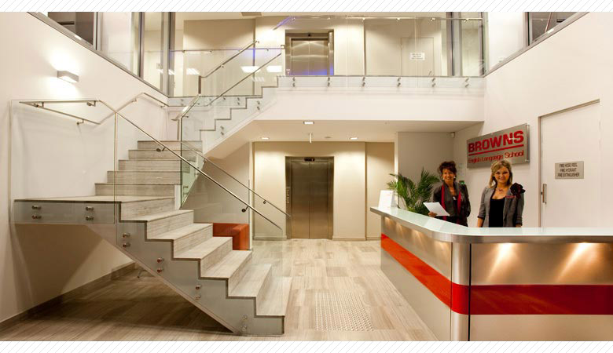
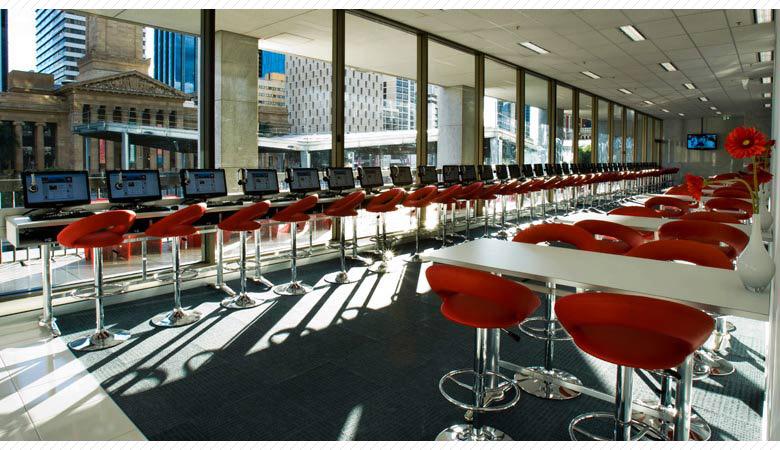
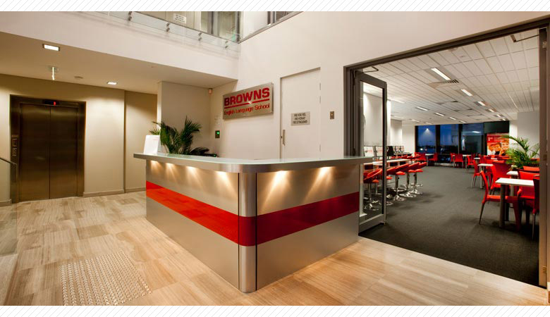
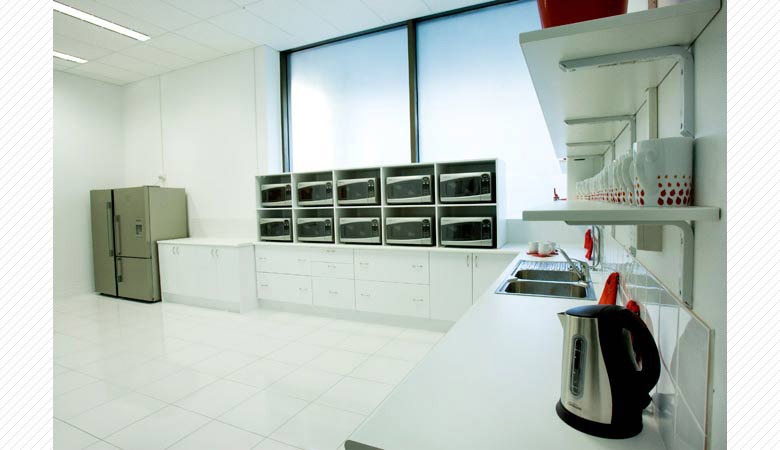

ブラウンズ・イングリッシュランゲージスクール
2003年にゴールドコーストに開校した学校は業務拡張に伴い、2009年には新たにブリスベンキャンパスをオープン。
又、2010年にはゴールドコーストにキャンパスを購入し、現在両キャンパスで約500人の学生を受け入れています。

ブラウンズ・イングリッシュランゲージスクール
Richard BrownとNiesha BrownによるBROWNSファミリーによって経営されている家族経営のアットホームな語学学校です。
校内はEnglish Onlyとはなりますが、日本人スタッフが両キャンパスに常勤していますので、
困ったことがありましたら日本語でのご相談も可能です。

最新設備を導入
全豪2キャンパスにそれぞれ最新設備を導入しており、各キャンパスの全教室に46インチの液晶テレビとパソコンを導入するなど、
授業もテクノロジーを使った内容で展開しています。

Active8 ( アクティベート) とは？
英語習得には全てのエリアを上達させる必要があり、ブラウンズでは読む、書く、話す、聞くの4つのスキル以外にも
語彙、文法、発音、場面英語の4つのシステムも総合的に学習し、それぞれレベルにあったクラスで勉強する事が出来ます。

無料アクティビティ＠ブラウンズ
世界各国からの学生と友達になるには、アクティビティの参加が近道です！
積極的に毎日参加してたくさんの友達を作って下さい。

充実した英語プラスコース
ブラウンズではオーストラリアならではの充実した英語プラスコースが毎週月曜日開講されています！
「英語プラス何かにチャレンジしたい」という方にはお勧めのコースです。 （ゴールドコーストキャンパスのみでの開講となります）
（英語＋サーフィン、ダイビング、ゴルフ、テニス、チャイルドケアボランティア、老人介護ボランティア）
画面をクリックするとビデオが再生されます。
＜Brisbane Campus School Tour＞
画面をクリックするとビデオが再生されます。
＜GOLD COAST Campus School Tour＞
画面をクリックするとビデオが再生されます。
＜BURISUBANE EXPERIENCE＞
画面をクリックするとビデオが再生されます。
＜GOLD COAST EXPERIENCE＞